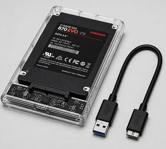

|
Linux
Tips . |
Clonezilla Your All-In-One Backup Drive |
 |
| Bit for bit Partition
Backup. - - All In One Disk - - A reliable and pristine backup is
important for data recovery during emergencies or mishaps.
This guides shows you how to make a bootable Clonezilla All-In-One backup drive using a UEFI boot. The trick is to be able to save your backups as images to the same disk that you booted from and for that we create another partition for your backup images. Create your backup drive in 4 easy steps. Step 1. Create Partitions on your Backup drive. We will use a large USB SSD drive
(e.g 500GB) as your Backup drive.
Use a program e.g gparted to delete and create partitions. Make sure you select a GPT
partition table (not MBR).
Create two partitions and format them like below;
Step 2. Download the Clonezilla ZIP file. Download Clonezilla Choose the Debian-based stable version. Select CPU architecture: amd64
Extract the zip file.Select file type: zip You will find there are several
directories and files e.g boot, EFI, home..etc
Copy everything into the Partition 1 of the Backup drive. (with EFI, etc at the root) . When you boot a modern motherboard
as UEFI, it should recognise Partition 1 as a boot option.
Step 4. Use ClonezillaIf your motherboard offers a UEFI menu, it should be one of the items. If not, go into your motherboard BIOS and try to find this boot option under 'Boot' , 'Boot Option #2', or an item inside 'Boot Override'. ( If your motherboard cannot find the clonezilla UEFI boot partition, consider installing rEFInd, which is a boot manager that boots everything under the sun. ) Once you boot clonezilla, just
follow the prompts.
You can select to either save or
restore an image of a partition or a disk.
When it comes to choosing a writable area to save, choose your boot disk (usually sda); sda
disk 465.8G
...
<-- Use this disk
and Partition 2 (usually sda2). e.g sda2 465.8G|exfat| ... <-- Use this partition to save your clonezilla images to That's it ! |
||||||||||||||||||||